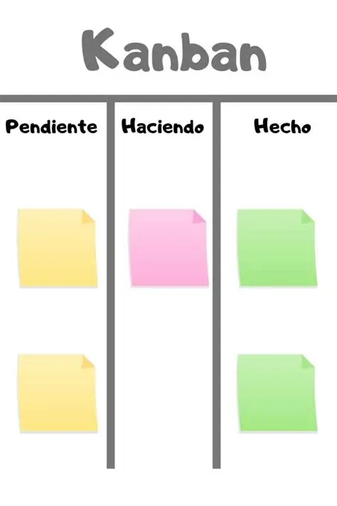

1. Historia
Nació en los años 40 en Toyota, creado por Taiichi Ohno. En 2007, David J. Anderson lo adaptó al desarrollo de software para mejorar el flujo de trabajo continuo.

2. Funcionamiento Detallado
- Workflow: Tablero con columnas (Backlog, En progreso, Hecho).
- WIP (Work In Progress): Limitar la cantidad de tareas simultáneas.
- Gestión de Tarjetas: Cada tarea es visual y se mueve de izquierda a derecha.